Administrador del sitio
Dejar el mazo publicado y estable.
- Guía rápida → panorama.
- WordPress → ZIP → Requisitos y actualizaciones.
- Escritorio → Web pública → Shortcodes.
- Opcional: Google, Turnstile, Reportes.
Manual único: puesta en marcha para administradores, integraciones, arquitectura del código y referencia técnica — en un flujo de lectura ordenado
Qué es este documento. Un manual lineal pensado para que cualquier persona con rol en el proyecto encuentre respuestas sin adivinar el orden: primero instalación y publicación, después integraciones (Google, Cloudflare, reportes), luego por qué el software está construido así (arquitectura y motor) y al final referencia (AJAX, cron, tablas). La sección Estructura del manual y recorridos amplía esta lógica con tablas y rutas por rol.
OSINT (Open Source Intelligence) designa el aprovechamiento metódico de información de fuentes abiertas y legalmente accesibles. OSINT Deck es un plugin de WordPress que implementa un panel centralizado (deck): un único punto de interacción donde el analista ingresa datos, filtra el catálogo y abre herramientas externas con parámetros ya resueltos, reduciendo el costo de cambiar de contexto entre docenas de pestañas.
Arquitectónicamente se comporta como un framework modular orientado a investigadores, periodistas y equipos de ciberseguridad: el núcleo orquesta detección de tipos de entrada, selección de herramientas, persistencia en base de datos y superficies de administración y front-end sin acoplar la lógica a un tema concreto de WordPress.
Contexto institucional. El desarrollo se enmarca en la Licenciatura en Ciberseguridad de la Universidad Nacional Raúl Scalabrini Ortiz (UNSO), ubicada en San Isidro, Buenos Aires, Argentina, su sitio web es https://www.unso.edu.ar/ y toma como referencia de dominio la experiencia del sitio OSINT.com.ar. El software se distribuye bajo licencia libre; el cuerpo del manual prioriza implementación y operación en lenguaje claro, con detalle técnico donde hace falta.
OSINT_DECK_VERSION en osint-deck.php y con el repositorio
OsintDeck/OsintDeck.
En esta sección definimos la lógica de todo el sitio: qué tipo de información encontrás en cada parte y en qué orden conviene leer si querés instalar, integrar servicios externos o entender el código. Los botones Anterior / Siguiente del panel siguen la misma secuencia lineal.
El manual mezcla propósitos distintos (modelo cercano a Diátaxis): cada uno responde a una pregunta diferente.
| Capa | Pregunta que responde | En este manual |
|---|---|---|
| Puesta en marcha | ¿Cómo llevo el plugin a producción y lo publico en mi sitio? | Desde Guía rápida hasta Tema y barra (instalación, escritorio, página pública, shortcodes). |
| Integración y operación | ¿Cómo conecto Google, Turnstile, reportes, GitHub (issues al reparar) y métricas? | Google, Reportes, GitHub e issues, Seguridad, TLDs, Historial, Métricas, Administración. |
| Explicación (conceptos) | ¿Por qué está hecho así y cómo encajan las piezas? | Arquitectura, Motor de decisiones (incluye Naive Bayes). |
| Referencia técnica | ¿Qué hook, acción AJAX o archivo toco para X? | Cron, AJAX, tablas densas y rutas de código. |
Dejar el mazo publicado y estable.
Endurecer y conectar servicios externos.
Leer código y extender el plugin.
En esta sección. Secuencia mínima para pasar de “no tengo nada” a “el mazo visible en una página”. Antes: leé Estructura del manual si no sabés por dónde seguir. Después: Tener WordPress → ZIP → Web pública.
Si nunca instalaste un plugin o WordPress te suena nuevo, seguí esta lista en orden:
[osint_deck] (o [osint_deck_search]). Guardás y
visitás la página: debería aparecer la barra de búsqueda del mazo.vendor/ lista para usar). Así no necesitás
Composer en el servidor.
OSINT Deck es un plugin: vive dentro de un sitio WordPress. No
reemplaza a WordPress ni se instala “solo”: primero tenés que tener WordPress en marcha
(base de datos, archivos en el servidor, acceso al escritorio /wp-admin).
WordPress.org mantiene la referencia estándar. Enlaces útiles:
Portada de documentación en español: wordpress.org/documentation/es/ (buscá allí instalación, plugins, etc.).
Estos pasos son para quien ya tiene WordPress y sólo quiere añadir el plugin.
osint-deck-vX.Y.Z.zip). Ese paquete está pensado para instalarse en
WordPress e incluye las dependencias PHP (vendor/)..zip en el paso de subida.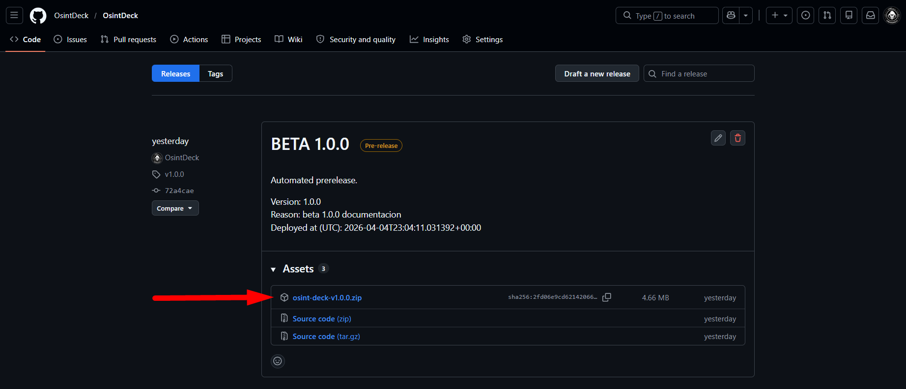
osint-deck-vX.Y.Z.zip (Asset),
el cual contiene el núcleo del plugin y las dependencias de Composer ya procesadas.
https://tu-dominio.com/wp-admin.(Guía genérica equivalente en WordPress.org: Managing Plugins, sección sobre subir plugins.)
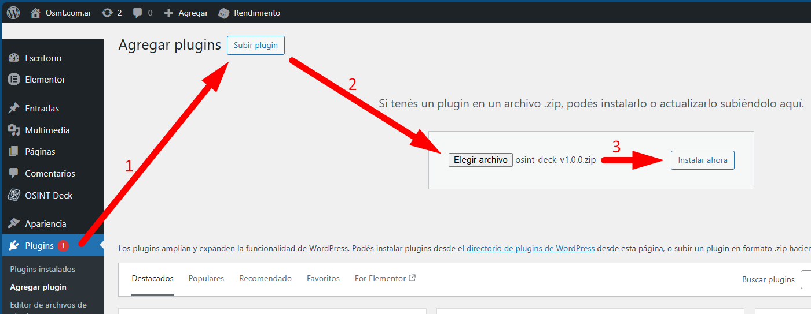
.zip oficial descargado previamente.
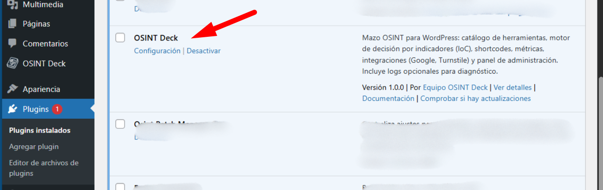
[osint_deck] o [osint_deck_search]
(ambos muestran el buscador del mazo).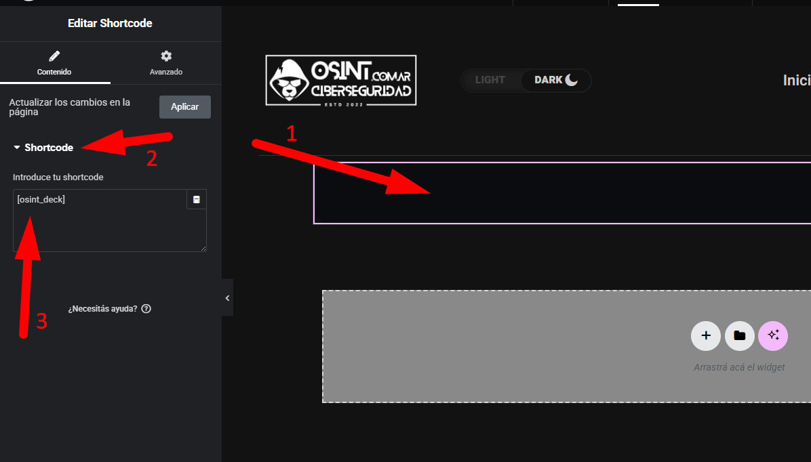
[osint_deck].
Aunque la captura muestra su uso en Elementor, el plugin es agnóstico al editor:
puede utilizarse en bloques de texto, widgets de shortcode o en el editor clásico de WordPress sin impedimentos técnicos.
composer install --no-dev.
En esta sección. Requisitos de servidor, Composer, ZIP con vendor/ y actualizaciones remotas.
Audiencia: quien despliega el plugin (administrador o DevOps).
Después: Composer / WP-CLI si trabajás desde el código, o saltá a
Escritorio WP si ya instalaste.
En la
práctica: descargá el ZIP de una release del repo
OsintDeck/OsintDeck
(debe incluir la carpeta vendor/). En wp-admin andá a
Plugins → Añadir nuevo → Subir plugin, elegí el ZIP, instalá y
Activá. Para una guía con más detalle y capturas, usá
Instalar el plugin (modo fácil) o la
Guía rápida. Si desarrollás el código: cloná el repositorio y ejecutá
composer install antes de empaquetar o subir por FTP (véase
Composer y WP-CLI).
Valores declarados en la cabecera del plugin (osint-deck.php):
Requires at least). Las ramas
6.x
actuales son el entorno objetivo en producción.Requires PHP); se recomienda 8.x alineado al
soporte del hosting.vendor/. Los ZIP de GitHub Releases deben incluir
vendor/autoload.php para instalación sin CLI en el servidor.
vendor/autoload.php el bootstrap fallará. Reinstalá desde el release o
ejecutá
composer install --no-dev --optimize-autoloader antes de empaquetar.
El bootstrap registra
plugin-update-checker
contra https://github.com/OsintDeck/OsintDeck. Los tags y el header
Version deben alinearse. Desactivación global:
define( 'OSINT_DECK_DISABLE_REMOTE_UPDATES', true );Publicar el ZIP como asset en cada release mejora la experiencia de actualización en el escritorio.
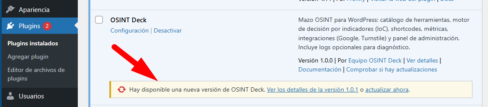
plugin-update-checker, el sistema detecta nuevas versiones en el repositorio oficial y permite
actualizar el mazo con un solo clic desde el escritorio de WordPress.
Si ya seguiste la guía fácil, podés saltar esta sección. Acá se describe copiar el código desde GitHub y usar Composer en tu entorno (no en el hosting si no podés).
composer install dentro de la carpeta del plugin.wp-content/plugins/osint-deck.Opcional: importar plantillas JSON o datos desde el panel.
wp plugin activate osint-deckvendor/autoload.php el plugin registrará
error. Revisá permisos de escritura para iconos y cachés.
Actualizaciones vía GitHub y constante de desactivación: véase Instalación y actualizaciones.
Todo esto está en el menú OSINT Deck del escritorio (submenús según la versión: herramientas, ajustes, métricas, etc.).
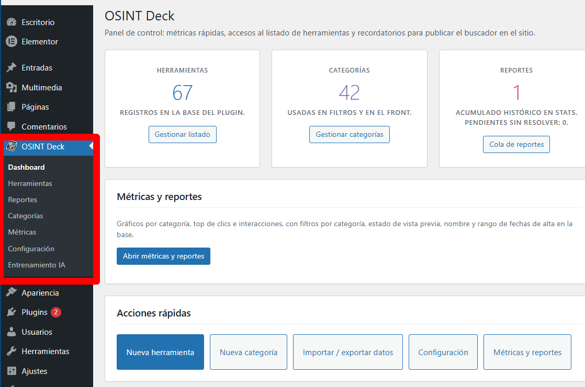
Estas acciones están en la página donde insertaste el shortcode. No hace falta ser administrador de WordPress.
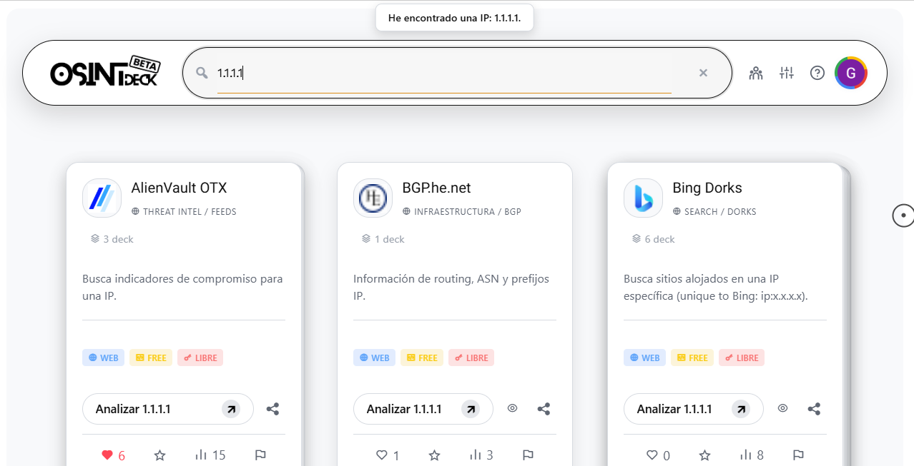
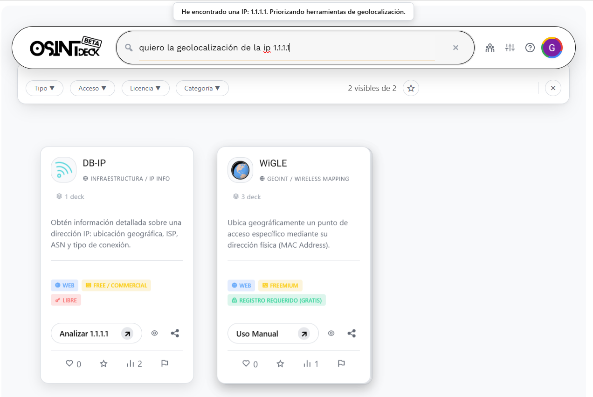
[osint_deck] y [osint_deck_search]Renderizan el buscador / mazo. El nombre osint_deck se mantiene por
compatibilidad.
[osint_deck_search]
[osint_deck]
[osint_deck category="dominios" access="gratuito" limit="20"]Atributos: category (nombre o código), access
(valor en metadatos), limit (si es > 0 recorta la lista; -1 sin
límite).
[osint_deck_cards]Rejilla estática de herramientas.
[osint_deck_cards category="dns" limit="10" orderby="clicks" order="DESC"]Atributos: category, tag, limit,
orderby (title | clicks), order
(ASC|DESC).
osint_deck_cards cuando solo quieras listar
herramientas sin el buscador completo.
El aspecto del mazo (claro / oscuro / según sistema) y el comportamiento de la barra se controlan desde OSINT Deck → Ajustes, pestañas de diseño o general según tu versión.
data-site-skin, clases en
<html>, etc.) para alinear con tu plantilla.OSINT_DECK_VERSION para forzar recarga al actualizar el plugin.En esta sección. OAuth de Google para visitantes del mazo (no usuarios wp-admin), flujo de token y datos guardados en tablas del plugin. Antes: Turnstile si lo tenés activo (afecta el login AJAX). Después: Historial y favoritos.
Opcional en OSINT Deck → Ajustes → Integraciones y Seguridad (misma pestaña que Turnstile y GitHub). Permite que visitantes del front (no administradores del escritorio WP) tengan una identidad estable para funciones del mazo sin crearles usuario WordPress.
El mazo funciona sin login: búsqueda y catálogo son públicos. La integración OAuth aporta valor cuando querés:
UserEvents / ToolReports).wp_users.Los perfiles viven en tablas del plugin (DeckUsers y relacionadas), no reemplazan al
sistema de usuarios de WordPress para administración del sitio.
osint_deck_auth_google con el nonce
público. Si Turnstile está activo, también envía el token de verificación.https://oauth2.googleapis.com/tokeninfo y comprueba que el aud
coincida con tu Client ID.sub válidos, se hace upsert del usuario del deck y se fija
la cookie de sesión osd_user.Necesitás un proyecto, pantalla de consentimiento OAuth (típicamente tipo externo) y un
ID de cliente OAuth 2.0 de aplicación Web. En el plugin también
podés guardar el Client Secret según la guía del panel (algunos flujos lo usan;
el intercambio vía tokeninfo del ID token es el camino documentado en código para la
sesión del deck).
En el escritorio de WordPress, el menú del plugin incluye un desplegable paso a paso (“Google SSO”) en Integraciones y Seguridad: usalo como checklist junto con esta documentación.
osint_deck_auth_google — validar ID token y abrir sesión.osint_deck_get_user — estado de sesión y listas (favoritos, reportes abiertos,
agradecimientos pendientes).osint_deck_logout — cerrar sesión del deck.osint_deck_delete_my_account — borrado de datos del usuario del deck (con
confirmación estricta en POST).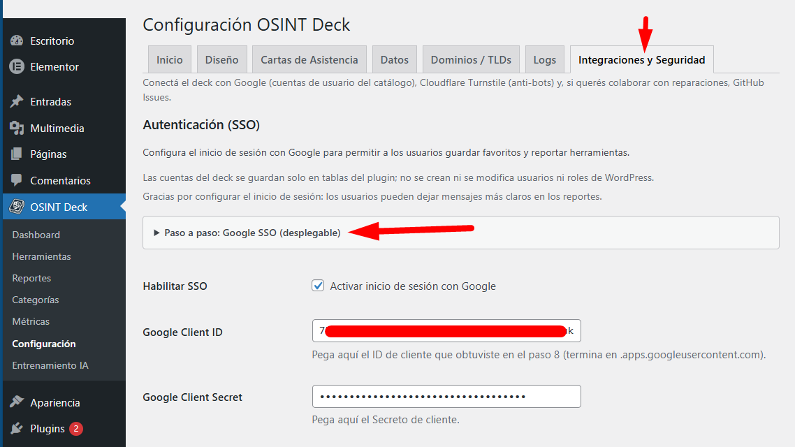
Cuando un enlace del catálogo está caído, desactualizado o es inapropiado, el visitante puede
marcar la herramienta con el control tipo bandera en la carta. Eso alimenta la
cola que ves en el escritorio como OSINT Deck → Reportes
(admin.php?page=osint-deck-tool-reports, pantalla
ToolReportsAdmin.php).
user_id en las tablas del plugin. Puede dejar un comentario
opcional al reportar (texto saneado y acotado en longitud).fp) y la persiste como hash
(ToolReports::fp_hash) para no duplicar reportes del mismo navegador hasta que se
cierre el ticket.Los inserts y bajas pasan por la acción unificada osd_user_event con evento
report / report_tool (UserEvents.php), con verificación
Turnstile si está habilitado. El contador visible de reportes en la ficha de la herramienta se
actualiza vía el repositorio (increment_reports / decrement_reports).
En Reportes ves herramientas con reportes abiertos. Al marcar como reparado:
ReportThanks).osint_deck_dismiss_report_thanks).La acción osint_deck_report_state solo devuelve qué herramientas tiene reportadas o
pendientes de agradecimiento el visitante (por usuario o huella); no modifica datos y en el código
actual no pasa por Turnstile, a diferencia del envío del reporte vía
osd_user_event.
En esta sección. Integración opcional para crear issues en GitHub cuando un administrador
marca una herramienta como reparada en OSINT Deck → Reportes.
Antes: entender el flujo de la bandera en Reportes de herramientas.
Código: GitHubRepairIssueNotifier.php.
Es una función opcional y voluntaria: sirve para que el equipo del sitio comparta con el repositorio
upstream (por ejemplo OsintDeck/OsintDeck) qué herramienta se corrigió, qué decían los reportes y un volcado JSON
importable.
tab=auth en la URL de ajustes).#osint-deck-github-section): activá la casilla, indicá
el repo en formato owner/repo (por defecto suele ser OsintDeck/OsintDeck) y pegá un
token de acceso personal con permiso para crear issues en ese repositorio (en la UI del plugin se recomienda un
token fine-grained; el asistente paso a paso está en el mismo panel).OSINT_DECK_GITHUB_ISSUES_TOKEN en el servidor (el
código la lee si la opción en BD está vacía).OSINT_DECK_GITHUB_API_URL en wp-config.php para
cambiar la base de la API respecto de https://api.github.com.Cuando resolvés reportes abiertos de una herramienta y enviás el formulario de “reparado”, si GitHub está bien configurado
aparece la opción de informar al desarrollador (report_to_developer). Si la marcás, el plugin
hace POST a la API de GitHub y crea un issue cuyo título sigue el patrón
[OSINT Deck] Reparada: … (host del sitio).
El cuerpo del issue incluye, entre otras cosas: URL del sitio, versión del plugin, nombre y slug de la herramienta, enlace a
edición en wp-admin, quién cerró el ticket, cantidad de reportes y de agradecimientos, lista de lo reportado (fecha, usuario WP
o “Anónimo”, mensaje si lo hubo), nota opcional del administrador sobre cómo se resolvió, y un bloque json con el
estado actual de la herramienta (mismo criterio que exportación; si es muy grande se trunca con aviso en el texto). Si la API
falla, el panel muestra el error y el mensaje del plugin indica revisar la configuración en Ajustes.
Si GitHub no está configurado y aun así marcás informar al desarrollador, verás un aviso para completar la
sección de GitHub en Integraciones y Seguridad (el enlace directo desde Reportes apunta a
admin.php?page=osint-deck-settings&tab=auth#osint-deck-github-section).
Si la integración no está lista, el plugin puede mostrar un recordatorio de colaboración en Reportes; se
puede descartar y reactivar desde los propios ajustes de GitHub en Integraciones y Seguridad (opción interna
osint_deck_github_collab_nudge_dismissed).
issues: write en el repo que elijas).
En esta sección. Turnstile, TLDs, logs y coste de las rutas públicas. Audiencia: integradores y administradores preocupados por abuso y rendimiento. Relacionado: Google, Reportes, GitHub (issues), Dominios / TLDs.
Aclaración: no hace falta que el sitio WordPress esté “detrás de” el proxy Cloudflare para usar esta función. El plugin integra el producto Turnstile (verificación humana / anti-bot de Cloudflare) como widget y verificación en servidor, similar conceptualmente a reCAPTCHA pero con la política de privacidad y UX de Cloudflare.
Pasos típicos:
El servidor valida el token con
https://challenges.cloudflare.com/turnstile/v0/siteverify
(Turnstile.php). El front envía el token en
cf_turnstile_response (o variante con guión). Si Turnstile está desactivado o faltan
claves, la verificación no se exige y las rutas siguen (útil en entornos de desarrollo local).
Qué protege cuando está activo (resumen): búsqueda del mazo, seguimiento de clics,
comprobación de iframes, bloqueo de iframe en caché, login y logout con Google, borrado de
historial, vaciar favoritos, borrar cuenta, cierre de mensajes de agradecimiento por reportes, y
los eventos públicos unificados osd_user_event (favoritos, me gusta,
reporte de herramienta, etc.). Algunas lecturas de estado (p. ej. sesión actual o
listado de historial) no pasan por Turnstile; revisá el código de
AjaxHandler.php y UserEvents.php si necesitás el detalle exacto por acción.
Documentación oficial: Cloudflare Turnstile.
La detección “dominio” depende de listas IANA mantenidas por TLDManager y tareas
programadas (véase Dominios y TLDs). Esto reduce falsos positivos
y evita
consultas externas por cada pulsación en el deck.
src/Infrastructure/Persistence/LogsTable.php define la tabla
{prefix}osint_deck_logs (mensaje, nivel, contexto serializado, marca temporal).
Complementa
el componente Infrastructure/Service/Logger.php para trazas operativas y
depuración
sin volcar datos sensibles al front.
current_user_can) en rutas de mantenimiento e
importación.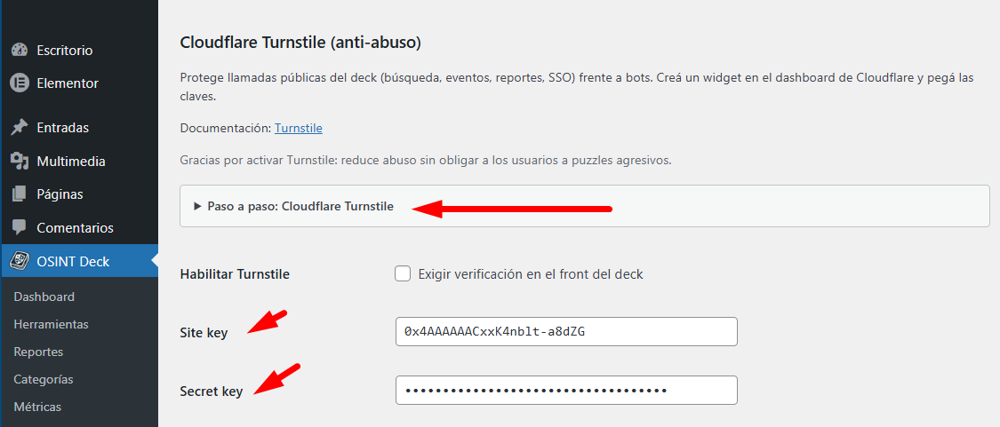
El motor valida dominios usando una copia local de la lista oficial IANA. Un cron del plugin refresca esa lista para no depender de una petición en cada búsqueda.
osint_deck_update_tlds.
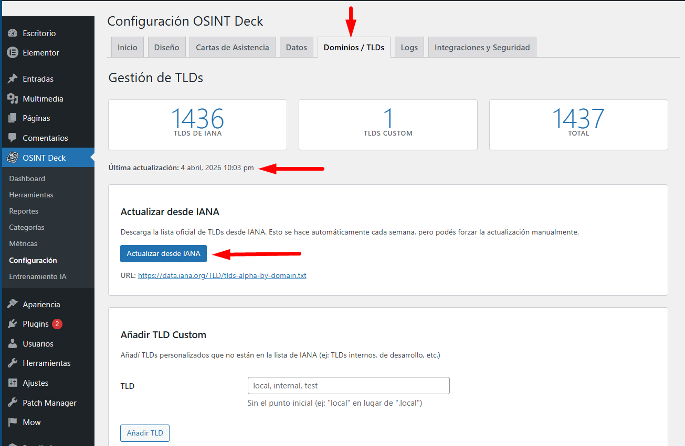
Estas capacidades enlazan el front con admin-ajax.php. El flujo de la
bandera de reporte está explicado en detalle en
Reportes de herramientas. Aquí el listado de acciones relacionadas.
Requieren nonces válidos; muchas escrituras exigen Turnstile si está activo (véase Turnstile).
osint_deck_get_history,
osint_deck_clear_history.osint_deck_clear_favorites y eventos
relacionados vía osd_user_event.osd_user_event — likes, reportes de
herramientas, etc., con comprobaciones anti-abuso.osint_deck_report_state,
osint_deck_dismiss_report_thanks.La pantalla OSINT Deck → Métricas
(Presentation/Admin/MetricsScreen.php)
agrega estadísticas de uso (clics, herramientas destacadas, filtros por rango temporal según
versión). Los gráficos se renderizan con Chart.js cargado solo en el hook
admin de
esa página: el script local preferido es
assets/vendor/chart.js/chart.umd.min.js, con fallback CDN si el archivo no
viaja en el
paquete. La lógica de dibujo vive en assets/js/admin-dashboard-charts.js,
apoyada en
datos preparados por DashboardChartsData.php.
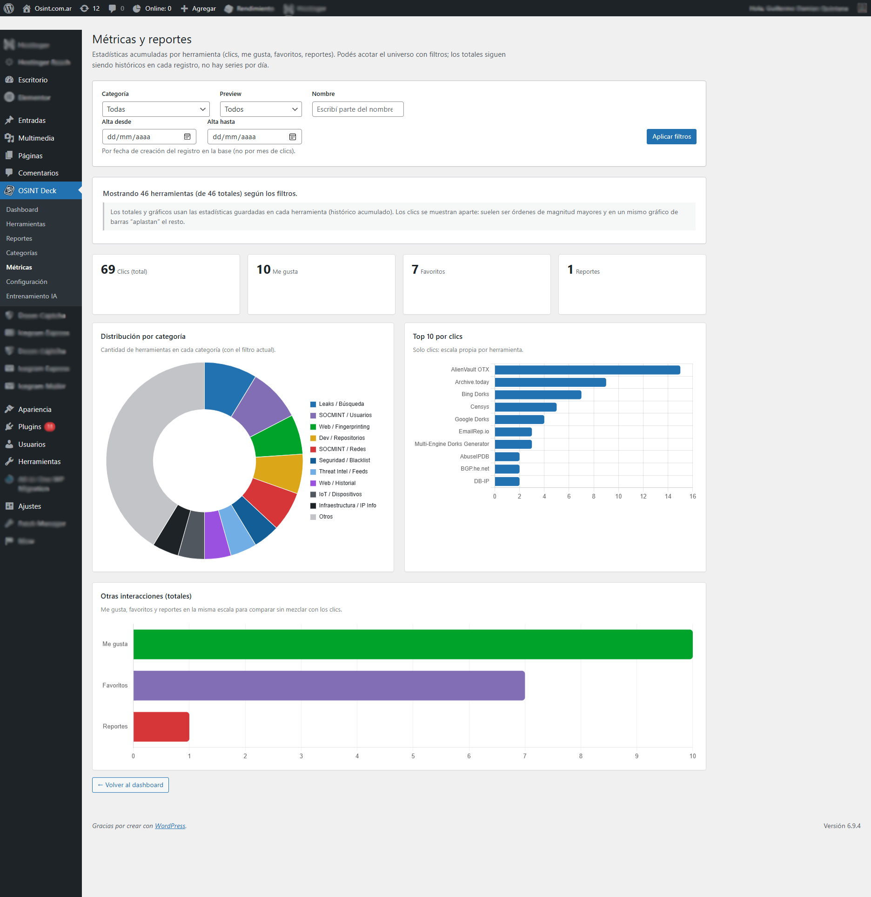
Desde el menú OSINT Deck accedés al CRUD del mazo y a las pantallas de configuración. Los nombres exactos de pestañas pueden variar ligeramente entre versiones.
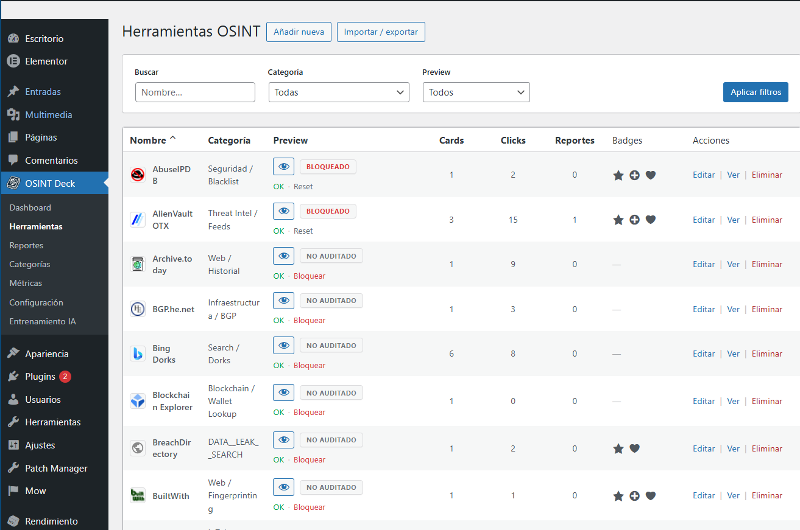
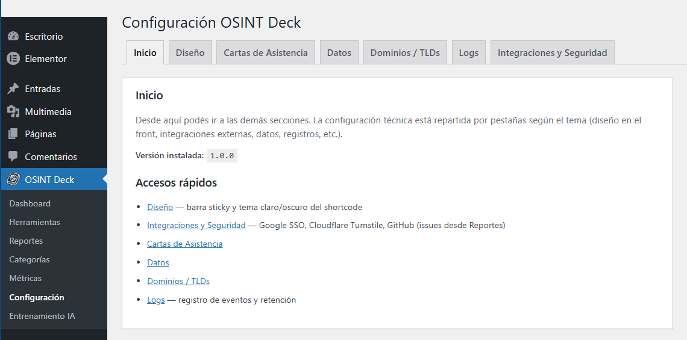
En esta sección. Mapa de carpetas bajo src/ y separación de capas (Domain, Infrastructure,
Presentation).
Audiencia: desarrolladores y quienes mantienen el código.
Antes: conviene haber leído la puesta en marcha; después:
Motor de decisiones y Referencia AJAX.
El código bajo convenciones PSR-4 vive en src/ y se organiza por capas para
separar
reglas de negocio, infraestructura y presentación.
Core/ — Bootstrap.php coordina el ciclo de
vida del
plugin: instancia repositorios, servicios de dominio, registra hooks de WordPress, menús
admin,
shortcodes, AJAX y migraciones de esquema.Domain/ — Lógica de negocio independiente del framework:
Service/DecisionEngine.php, Service/InputParser.php,
Service/NaiveBayesClassifier.php e interfaces en Repository/
(contratos de herramientas y categorías).
Infrastructure/ — Persistencia
(Persistence/*.php:
tablas personalizadas, repositorios concretos), integraciones
(Service/TLDManager.php,
Auth/), seguridad (Security/Turnstile.php) y utilidades
(logger,
iconos, respaldos).
Presentation/ — Admin/ (ajustes, métricas,
herramientas, import/export), Frontend/Shortcodes.php y Api/
(p. ej. AjaxHandler.php, eventos de usuario).Los datos semilla y configuraciones estáticas complementarias residen en data/
(JSON de herramientas, categorías, entrenamiento y dorks), alimentando un modelo
data-driven sin recompilar PHP para ajustes de catálogo en entornos administrados.
El cerebro operativo es src/Domain/Service/DecisionEngine.php. Recibe la
consulta del
usuario y devuelve estructura lista para el front: modo de operación, entradas detectadas y
conjunto de herramientas/cartas relevantes.
InputParser.php aplica patrones (regex) y
validación
asistida por TLDManager para distinguir IP, dominio, correo, hash, URL,
ASN,
teléfono, wallet, etc.MODE_CATALOG (catálogo
filtrable). Con entradas: MODE_INVESTIGATION (activación contextual de
herramientas).NaiveBayesClassifier para sugerir mazos en función
de
rasgos del input.admin-ajax.php, acción osint_deck_search u otras definidas en
AjaxHandler).
En este proyecto “bayesiano” se refiere al clasificador Naive Bayes
implementado en src/Domain/Service/NaiveBayesClassifier.php. Es un modelo probabilístico
clásico de NLP: a partir de ejemplos de texto etiquetados, estima qué tan probable es que una
frase nueva pertenezca a una categoría (por ejemplo intención de ayuda, tipo de dato técnico,
saludo, etc.). “Naive” indica que se asume independencia entre palabras; simplifica el cálculo y
suele funcionar bien cuando las palabras clave son buenas señales, como en consultas tipo
dorks o OSINT.
Orden real en el motor: primero InputParser intenta detectar tipos
con expresiones regulares y validaciones (dominio con TLD, IP, hash, URL…). Solo
si no hubo coincidencias, entra el Naive Bayes: clasifica el texto libre y, si la
predicción es aceptada, se traduce a un tipo interno compatible con el resto del
DecisionEngine. Así las regex cubren lo estructurado y el clasificador refuerza
lenguaje más abierto o ambiguo.
Datos de entrenamiento: semilla en data/training_data.json; en
producción el modelo y ejemplos pueden persistir en opciones de WordPress. Los administradores
pueden ampliar el entrenamiento desde OSINT Deck → Entrenamiento IA (Naive Bayes)
(AiTrainingManager.php), alineado con backups que incluyen el estado del clasificador
(DeckFullBackup).
El catálogo no está hardcodeado en el motor: se nutre de definiciones persistidas
(importables
desde JSON en data/ como tools-defaults.json,
categories-defaults.json, training_data.json, etc.) y de filas en
tablas
propias tras la activación del plugin. Esto permite actualizar herramientas sin tocar el
núcleo
del clasificador salvo nuevos tipos de entrada.
# Referencias de código y datos
src/Domain/Service/DecisionEngine.php
src/Domain/Service/InputParser.php
data/tools-defaults.json
data/categories-defaults.jsonWordPress dispara estos hooks según la cola de wp-cron.php (en muchos hostings
se ejecuta al visitar el sitio; en producción conviene cron real del sistema apuntando a
wp-cron.php).
osint_deck_update_tlds — actualización periódica (semanal) de la lista IANA
de TLDs.osint_deck_daily_cleanup — limpieza diaria de datos temporales o
mantenimiento ligero según la versión del plugin.Todas las acciones van contra wp-admin/admin-ajax.php (o
admin-ajax.php en la raíz de admin) con el parámetro action igual
al nombre listado. El front envía nonces para validar el origen.
Públicas (o mixtas): búsqueda y motor osint_deck_search,
seguimiento de clics osint_deck_track_click, comprobación de embeds
osint_deck_check_iframe, bloques de reporte
osint_deck_report_block, autenticación Google, historial, favoritos,
osd_user_event, y acciones de reportes citadas en Historial y favoritos.
Solo administración: mantenimiento de iconos
(osint_deck_force_download_icons, osint_deck_list_remote_icons,
osint_deck_save_manual_icons), import/export de herramientas
(osint_deck_import_tool, osint_deck_export_tool), sugerencias para
métricas osint_deck_metrics_tool_suggest, etc. Requieren usuario con capacidad
adecuada y nonce de admin.
admin-ajax.php y revisá el cuerpo de la respuesta si una carta o
el login fallan en silencio.
OSINT Deck es un plugin para WordPress que centraliza y organiza herramientas de investigación en fuentes abiertas. El usuario ingresa un dato (correo, dominio, IP, hash, etc.) y el sistema lo clasifica automáticamente para activar los recursos pertinentes —vista embebida o acceso externo con parámetros cargados— usando una lógica de mazos y cartas que facilita el flujo de trabajo.
El proyecto fue desarrollado en la Licenciatura en Ciberseguridad de la Universidad Nacional Raúl Scalabrini Ortiz (UNSO), Argentina, tomando como referencia la experiencia del blog OSINT.com.ar. Hoy está publicado como software libre y puede instalarse en cualquier WordPress. Para implementación interna véase Arquitectura del sistema.
El motor de decisión analiza el texto ingresado. Entre otros formatos:
Para gráficos, filtros y detalle de implementación véase Métricas y panel de administración.
Las capturas están en las secciones que corresponden (instalación, métricas, ajustes, etc.). Esta entrada del manual solo ofrece un índice para ir directo a una figura concreta si ya sabés qué buscás.
Los números Fig. 1…14 siguen el orden en que las figuras aparecen al leer el manual de principio a fin.
Agradecemos profundamente a las autoridades de la universidad por su apoyo y visión:
Este proyecto no habría sido posible sin la dedicación, conocimiento y guía del cuerpo docente de la carrera:
Agradecemos también a la comunidad de OSINT.com.ar, cuyo trabajo y dedicación en el campo de la inteligencia de fuentes abiertas inspiró y dio contexto a este proyecto.
Equipo de desarrollo: